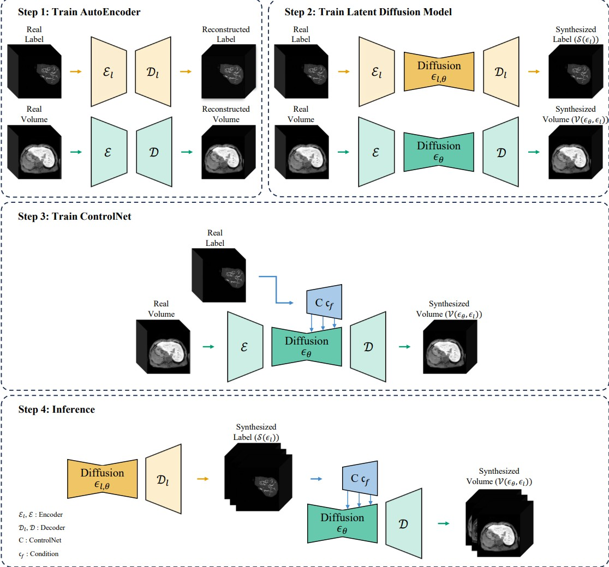

Deep learning and generative models are advancing rapidly, with synthetic data increasingly being integrated into training pipelines for downstream analysis tasks. However, in medical imaging their adoption remains constrained by the scarcity of reliable annotated datasets.
To address this limitation, we propose 3D-LLDM, a label-guided 3D latent diffusion model that generates high-quality synthetic magnetic resonance (MR) volumes with corresponding anatomical segmentation masks. Our approach utilizes hepatobiliary phase MR images enhanced with Gd-EOB-DTPA contrast agent to derive structural masks for liver, portal vein, hepatic vein, and hepatocellular carcinoma, which subsequently guide volumetric synthesis through a ControlNet-based architecture.
Trained on 720 real clinical hepatobiliary phase MR scans from Samsung Medical Center, 3D-LLDM achieves Frechet Inception Distance (FID) of 28.31 and a 70.9% improvement over GANs and 26.7% over state-of-the-art diffusion baselines. When used for data augmentation, our synthetic volumes boost hepatocellular carcinoma segmentation by up to 11.153% Dice score across five CNN architectures.
Kyeonghun Kim
Research Assistant
Kyeonghun Kim is a Research Assistant at IMSI Research Lab, Seoul National University, specializing in medical imaging, generative AI, and multimodal deep learning applications. He leads the SUDAL Medical Imaging Team and has extensive experience in developing state-of-the-art AI solutions for medical image analysis, including 3D MRI synthesis, diffusion models, and vision-language models.